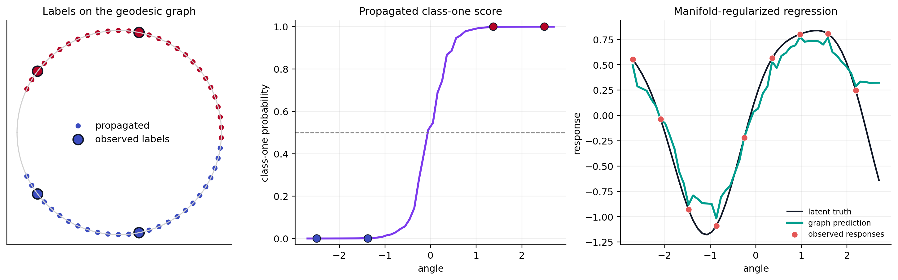

Semi-Supervised Learning on the Circle#
Unlabeled manifold observations still reveal neighborhood structure. Given a geodesic-distance affinity matrix \(W\), label propagation smooths class scores over the graph while preserving known labels [Zhou et al., 2003]. For a scalar response, graph-regularized prediction minimizes
where \(L_G=\operatorname{diag}(W\mathbf 1)-W\) [Belkin et al., 2006]. These are transductive methods: this tutorial predicts the supplied graph vertices, not unseen points.
from pathlib import Path
import jax
jax.config.update("jax_enable_x64", True)
import jax.numpy as jnp
import matplotlib.pyplot as plt
import numpy as np
from geojax.geometry import Sphere
from geojax.learning import label_propagation, manifold_regularized_regression
plt.rcParams.update({
"figure.dpi": 220,
"savefig.dpi": 320,
"font.size": 10,
"axes.titlesize": 11,
"axes.spines.top": False,
"axes.spines.right": False,
})
M = Sphere(size=2)
angles = jnp.linspace(-2.7, 2.7, 54)
points = jnp.stack([jnp.cos(angles), jnp.sin(angles)], axis=-1)
true_classes = (angles > 0.0).astype(int)
observed_labels = jnp.full((len(points),), -1)
label_indices = jnp.array([2, 13, 40, 51])
observed_labels = observed_labels.at[label_indices].set(true_classes[label_indices])
classification = label_propagation(
M,
points,
observed_labels,
bandwidth=0.28,
n_neighbors=5,
alpha=0.92,
maxiter=500,
)
true_response = jnp.sin(1.4 * angles) + 0.18 * jnp.cos(3.0 * angles)
regression_targets = jnp.full_like(true_response, jnp.nan)
regression_indices = jnp.arange(0, len(points), 6)
regression_targets = regression_targets.at[regression_indices].set(
true_response[regression_indices]
)
regression = manifold_regularized_regression(
M,
points,
regression_targets,
bandwidth=0.28,
n_neighbors=5,
ambient_regularization=1e-4,
intrinsic_regularization=0.08,
)
classification_accuracy = jnp.mean(classification.predictions == true_classes)
regression_mse = jnp.mean((regression.predictions - true_response) ** 2)
print(f"label-propagation accuracy: {float(classification_accuracy):.3f}")
print(f"graph-regression MSE: {float(regression_mse):.5f}")
label-propagation accuracy: 0.981
graph-regression MSE: 0.05657
Visual report#
The graph uses only manifold distances. In the first panel, large outlined points are the four supplied labels and smaller points are propagated labels. The second shows the class-one score. The last compares sparse observed responses with the graph-smoothed transductive fit.
fig, axes = plt.subplots(1, 3, figsize=(13.4, 4.0), constrained_layout=True)
circle = np.linspace(-np.pi, np.pi, 600)
axes[0].plot(np.cos(circle), np.sin(circle), color="0.82", linewidth=1.1)
axes[0].scatter(
np.asarray(points[:, 0]), np.asarray(points[:, 1]),
c=np.asarray(classification.predictions), cmap="coolwarm", s=34,
edgecolor="white", linewidth=0.35, label="propagated",
)
axes[0].scatter(
np.asarray(points[label_indices, 0]), np.asarray(points[label_indices, 1]),
c=np.asarray(observed_labels[label_indices]), cmap="coolwarm", s=115,
edgecolor="#111827", linewidth=1.4, label="observed labels",
)
axes[0].set(aspect="equal", xlim=(-1.1, 1.1), ylim=(-1.1, 1.1), title="Labels on the geodesic graph")
axes[0].set_xticks([])
axes[0].set_yticks([])
axes[0].legend(frameon=False, loc="center")
axes[1].plot(
np.asarray(angles), np.asarray(classification.scores[:, 1]),
color="#7C3AED", linewidth=2.1,
)
axes[1].scatter(
np.asarray(angles[label_indices]), np.asarray(true_classes[label_indices]),
c=np.asarray(true_classes[label_indices]), cmap="coolwarm", s=65,
edgecolor="#111827", linewidth=0.8, zorder=3,
)
axes[1].axhline(0.5, color="0.45", linestyle="--", linewidth=1.0)
axes[1].set(
title="Propagated class-one score",
xlabel="angle",
ylabel="class-one probability",
ylim=(-0.03, 1.03),
)
axes[1].grid(alpha=0.18)
axes[2].plot(
np.asarray(angles), np.asarray(true_response),
color="#111827", linewidth=1.7, label="latent truth",
)
axes[2].plot(
np.asarray(angles), np.asarray(regression.predictions),
color="#009E8E", linewidth=2.1, label="graph prediction",
)
axes[2].scatter(
np.asarray(angles[regression_indices]),
np.asarray(regression_targets[regression_indices]),
color="#E45756", s=42, edgecolor="white", linewidth=0.4,
label="observed responses", zorder=3,
)
axes[2].set(title="Manifold-regularized regression", xlabel="angle", ylabel="response")
axes[2].grid(alpha=0.18)
axes[2].legend(frameon=False, fontsize=8)
output = next(
path for path in (
Path("../_static/tutorials/semi-supervised-circle.png"),
Path("docs/_static/tutorials/semi-supervised-circle.png"),
Path("_static/tutorials/semi-supervised-circle.png"),
)
if path.parent.exists()
)
output.parent.mkdir(parents=True, exist_ok=True)
fig.savefig(output, bbox_inches="tight")
plt.show()

Graph predictions depend on the bandwidth, neighborhood size, graph connectivity, and regularization. An unlabeled connected component carries no class evidence; GeoJAX reports uniform scores there rather than inventing a label from array order.
References#
Mikhail Belkin, Partha Niyogi, and Vikas Sindhwani. Manifold regularization: a geometric framework for learning from labeled and unlabeled examples. Journal of Machine Learning Research, 7(85):2399–2434, 2006. URL: https://www.jmlr.org/papers/v7/belkin06a.html.
Dengyong Zhou, Olivier Bousquet, Thomas Navin Lal, Jason Weston, and Bernhard Schölkopf. Learning with local and global consistency. In Advances in Neural Information Processing Systems, volume 16. 2003. URL: https://proceedings.neurips.cc/paper/2003/hash/87682805257e619d49b8e0dfdc14affa-Abstract.html.